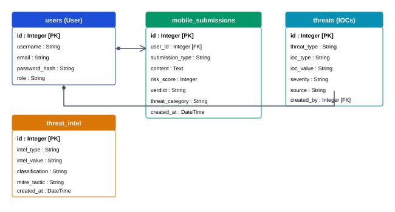
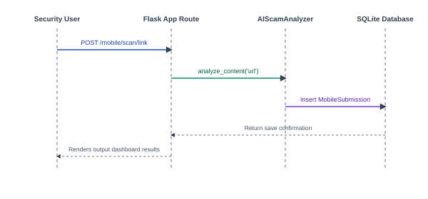
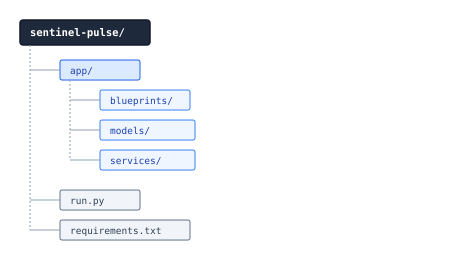
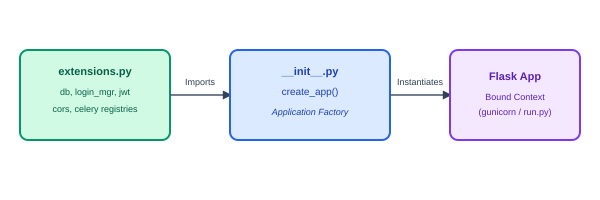

SRINIVAS UNIVERSITY
INSTITUTE OF ENGINEERING & TECHNOLOGY
MUKKA, MANGALURU – 574146
MAJOR PROJECT REPORT ON
MASTER OF COMPUTER APPLICATIONS
(DUAL SPECIALIZATION)
Mrs. Mamatha S J
Assistant Professor, Dept of MCA
SRINIVAS UNIVERSITY, MUKKA
2025-26
SRINIVAS UNIVERSITY
INSTITUTE OF ENGINEERING AND TECHNOLOGY
MUKKA, SURATHKAL, MANGALURU-574146
DEPARTMENT OF MASTER OF COMPUTER APPLICATIONS
CERTIFICATE
Certified that the project work entitled “SENTINEL PULSE: AN AI-DRIVEN UNIFIED THREAT INTELLIGENCE AND MOBILE SECURITY OBSERVABILITY PLATFORM” is a bona fide work carried out by Mr. Mohammed Yasir bearing Register Number 03SU24MC838 in partial fulfillment for the award of MASTER OF COMPUTER APPLICATIONS of the *Srinivas University Institute Of Engineering And Technology, Mukka, Mangaluru* during the year 2025–2026.
It is certified that all corrections/suggestions indicated for Internal Assessment have been incorporated in the report deposited in the departmental library. The project report has been approved as it satisfies the academic requirements in respect of Project work prescribed for the MASTER OF COMPUTER APPLICATIONS Degree.
Project Guide
Head of the Department
Dean, SUIET, Mukka
SRINIVAS UNIVERSITY
INSTITUTE OF ENGINEERING AND TECHNOLOGY
MUKKA, SURATHKAL, MANGALORE-574146
Department of Master of Computer Applications
DECLARATION
I, Mr. MOHAMMED YASIR, student of fourth semester, MASTER OF COMPUTER APPLICATIONS, Srinivas University, Mukka, hereby declare that the project entitled “Sentinel Pulse: An AI-Driven Unified Threat Intelligence and Mobile Security Observability Platform” has been successfully completed by me in partial fulfillment of the requirements for the award of degree in MASTER OF COMPUTER APPLICATIONS of Srinivas University Institute of Engineering and Technology and no part of it has been submitted for the award of degree or diploma in any university or institution previously.
Place: Mukka, Mangaluru
MOHAMMED YASIR
Reg. No: 03SU24MC838
__________________________
ABSTRACT
Modern smartphone users face an escalating barrage of targeted cybersecurity threats, including smishing (SMS phishing), malicious WhatsApp transcripts, fraudulent email campaigns, malicious APK payloads, and credential harvesting QR codes. Traditional Security Operations Center (SOC) platforms monitor enterprise server and network infrastructure but lack direct visibility into these smartphone endpoint attack vectors. Sentinel Pulse was designed to bridge this critical visibility gap.
Sentinel Pulse is a unified, production-grade cybersecurity application platform designed to ingest multi-channel mobile threat telemetry and process it through a custom-built AI Scam Analyzer & Heuristics Engine. Built on the clean architecture paradigm and Flask Application Factory pattern, the platform accepts inputs from various vectors (SMS texts, URLs, WhatsApp messages, APK file hashes, QR destination links) and evaluates them against localized fraud keyword patterns, fear-inducing urgency classifiers, and a historical Threat Correlation blocklist. The platform integrates directly with public reputation lookup services (VirusTotal API and AbuseIPDB API) to dynamically enrich threat indicators (IOCs). High-risk submissions (verdict score ≥ 35) automatically generate system-wide Threat indicators, register corresponding SOC Alerts, dispatch Audit logs, and broadcast notifications to system analysts.
The backend system, implemented in Python 3.12 and Flask, is supported by a robust SQLite database layer using SQLAlchemy ORM. The interface features a stylized "Cyber Theme" Dark Console powered by HTML5, CSS3, JavaScript, and Bootstrap 5, complete with dynamic SVG metrics, interactive scanning widgets, threat timelines, and a rule-based AI Security Assistant chat copilot. Extensive automated verification suites using Pytest confirm the accuracy of heuristic classifications, API connectivity, and pipeline state transitions with all 81 tests passing successfully. Sentinel Pulse demonstrates that real-time threat intelligence and mobile security observability can be effectively consolidated into a unified operations console, empowering both endpoints and security analysts to defend against modern social engineering campaigns.
Keywords: Threat Intelligence, SOC Observability, Mobile Security, Smishing Detection, Heuristics Analyzer, VirusTotal Integration, Flask Application Factory, Clean Architecture.
ACKNOWLEDGEMENT
I take this opportunity to express my profound gratitude to my respected project guide Mrs. Mamatha S J, Assistant Professor, Dept. of MCA for her ever-inspiring guidance, constant encouragement, and support.
I also would like to express my deep sense of gratitude and indebtedness to our Project coordinator Prof. Vishnu P J, Assistant Professor, Dept. of MCA for his encouragement and guidance that he has extended in the course of carrying out my project.
I sincerely thank Prof. Anand S Uppar, Head of the Department, Master of Computer Applications, for being an inspiration and support throughout this project.
I am extremely grateful to our respected Dean, Dr. Ramakrishna N Hegde for providing the facilities to carry out the project.
I am deeply indebted to Late Dr. Sri. CA. A. Raghavendra Rao, Founder Chancellor of Srinivas University, Mangaluru, whose vision and commitment to education continue to inspire me.
I extend my sincere gratitude to Dr. A. Srinivas Rao, Chancellor, Srinivas University, Mangaluru, for providing a supportive academic environment and the necessary facilities that enabled me to successfully complete this project.
I would like to thank all the teaching and non-teaching staff of the Master of Computer Applications for their support and help.
Finally, I express my profound gratitude to my parents and friends who have helped me in every conceived manner with their valuable suggestions, encouragement, and moral support.
TABLE OF CONTENTS
| SECTION | CONTENTS | PAGE NO. |
|---|---|---|
| 1. | SYNOPSIS | 1 - 5 |
| 1.1 Introduction | 1 | |
| 1.2 Project Agenda | 1 | |
| 1.3 Project Description | 1-2 | |
| 1.4 Problem Statement | 2-3 | |
| 1.5 Proposed Solution | 3 | |
| 1.6 Objective of the Project | 3-4 | |
| 1.7 Scope of the Project | 4 | |
| 1.8 Applications of the Project | 4 | |
| 1.9 Advantages | 4-5 | |
| 1.10 Disadvantages | 5 | |
| 2. | LITERATURE SURVEY | 6 - 7 |
| 2.1 Existing System | 6 | |
| 2.2 Proposed System | 6 | |
| 2.3 Research Gap | 6-7 | |
| 2.4 Comparative Analysis | 7 | |
| 3. | REQUIREMENTS SPECIFICATION | 8 - 10 |
| 3.1 Hardware Requirements | 8 | |
| 3.2 Software Requirements | 8 | |
| 3.3 Programming Languages | 8 | |
| 3.4 Libraries and Frameworks Used | 8-9 | |
| 3.5 Technology Stack | 9 | |
| 3.6 Machine Learning & Deep Learning Models | 9 | |
| 3.7 Functional Requirements | 9-10 | |
| 3.8 Non-Functional Requirements | 10 | |
| 4. | SYSTEM DESIGN | 11 - 18 |
| 4.1 System Architecture | 11 | |
| 4.2 Workflow Diagram | 12-13 | |
| 4.3 Flowchart | 13-14 | |
| 4.4 Database Design | 15-16 | |
| 4.5 Use Case Diagram | 16-17 | |
| 4.6 Activity Diagram | 17-18 | |
| 4.7 Sequence Diagram | 18 | |
| 4.8 Algorithms Used | 18 | |
| 5. | IMPLEMENTATION | 19 - 29 |
| 5.1 Project Introduction | 19 | |
| 5.2 Project Directory Structure | 19-20 | |
| 5.3 Backend Implementation | 20-24 | |
| 5.4 AI & Machine Learning Implementation | 24-26 | |
| 5.5 Frontend Implementation | 26-29 | |
| 5.6 Experimental Setup | 29 | |
| 6. | TESTING | 30 - 31 |
| 6.1 Unit Testing | 30 | |
| 6.2 Integration Testing | 30 | |
| 6.3 Performance Testing | 31 | |
| 7. | RESULTS AND ANALYSIS | 32 - 38 |
| 7.1 Dashboard Results | 32 | |
| 7.2 Threat Intelligence Results | 33 | |
| 7.3 Incident Observability Results | 33-34 | |
| 7.4 AI Scam Analyzer Results | 34 | |
| 7.5 API Integration Results | 34-35 | |
| 7.6 VirusTotal/AbuseIPDB Integration Results | 35 | |
| 7.7 SOC Console Alert Timeline | 36 | |
| 7.8 Admin Module Results | 36-37 | |
| 7.9 Performance Comparison | 37 | |
| 7.10 Alert & Notification Rules | 37-38 | |
| 8. | CONCLUSION & FUTURE ENHANCEMENTS | 39 - 40 |
| 8.1 Conclusion | 39 | |
| 8.2 Future Enhancements | 40 | |
| REFERENCES | 41 - 42 | |
| APPENDICES | 43 - 46 | |
| Appendix – A: Budget Allocation for the Project | 43 | |
| Appendix – B: Plagiarism Report | 44 | |
| Appendix – C: Student and Guide Profile | 45 | |
| Appendix – D: Patent / Journal Certificate | 46 | |
LIST OF FIGURES
| FIGURE NO. | FIGURE NAME | PAGE NO. |
|---|---|---|
| Fig 4.1 | System Architecture Diagram | 11 |
| Fig 4.2 | Overall Workflow Sequence Diagram | 12 |
| Fig 4.3 | Heuristic Analyzer Decision Flowchart | 14 |
| Fig 4.4 | Database Entity Relationship Diagram (ERD) | 15 |
| Fig 4.5 | Use Case Diagram | 16 |
| Fig 4.6 | Ingestion Pipeline Activity Diagram | 17 |
| Fig 4.7 | Scan Execution Sequence Diagram | 18 |
| Fig 5.1 | Project Directory Structure | 19 |
| Fig 5.2 | Flask Application Factory Layout | 20 |
| Fig 7.1 | SOC Threat Analyst Dashboard | 32 |
| Fig 7.2 | Mobile Submission Scanning View | 33 |
| Fig 7.3 | Threat Intelligence Logs & IOC timelines | 34 |
| Fig 7.4 | AI Security Assistant Interface | 34 |
| Fig 7.5 | VirusTotal API Reputation Feed | 35 |
| Fig 7.6 | SOC Alert Console Timeline | 36 |
| Fig 7.7 | Administrative Configurations Screen | 37 |
| Fig 7.8 | Active System Notifications console | 38 |
CHAPTER - 1: SYNOPSIS
1.1 INTRODUCTION
Mobile computing devices have evolved from simple communication instruments into the primary repositories of personal data and financial interfaces for users worldwide. As a direct consequence, malicious actors have shifted their attack vectors toward mobile endpoints. Mobile-specific social engineering attacks, such as smishing (SMS phishing), malicious WhatsApp transcripts, fraud-enabling email templates, malicious APK installers, and credential-harvesting QR codes, represent a massive and growing sector of digital crime. While traditional Security Operations Center (SOC) platforms monitor enterprise endpoints, firewalls, and mail relays, they have a blind spot regarding smartphone threat telemetry. Most security analysts remain unaware of threats circulating via SMS or WhatsApp until a data breach occurs.
Sentinel Pulse is designed to address this security visibility gap by consolidating mobile endpoint telemetry into a unified Threat Intelligence and Observability platform. Sentinel Pulse provides a web console where users and automated endpoint agents can submit threat indicators, including texts, URLs, sender info, and APK hashes. The platform subjects these submissions to an automated, multi-tiered AI Scam Heuristics Engine, classifies them based on risk severity, enriches indicators via API lookups, and escalates serious incidents to the enterprise SOC interface in real-time. By bridging user-level endpoints and analyst consoles, Sentinel Pulse changes mobile security from an isolated personal issue to a structured, observable, and correlatable enterprise defense.
1.2 PROJECT AGENDA
The agenda of Sentinel Pulse is to turn unmanaged, scattered mobile threat indicators (e.g., suspicious texts, SMS headers, copied links, file signatures) into centralized, actionable cyber threat intelligence. The primary goal is to combine dynamic threat ingestion with automated AI heuristic triage so that high-risk incidents (such as UPI scams, fake bank KYC updates, and malicious APK downloads) can be detected and blocked instantly, while giving security analysts an observability dashboard to track campaigns, audit actions, and push alerts across the enterprise network.
1.3 PROJECT DESCRIPTION
Sentinel Pulse is implemented as a production-grade web application using Python 3.12, Flask, and SQLite. The application follows a Clean Architecture design and the Flask Application Factory pattern, preventing circular dependencies and allowing clean separation of concerns. The platform contains a set of modular Blueprints, Models, Services, and Utilities:
- Authentication and Session Registry: Provides secure multi-role login (Users/Endpoint Clients vs. Security Analysts) using Flask-Login and JWT (JSON Web Tokens) with hashed password stores.
- Unified Ingestion API (/mobile/submit): Accepts multi-channel submissions including SMS texts, URL destinations, WhatsApp chats, email details, APK parameters, and optional screenshots.
- AI Scam Heuristics Engine: A core service (
AIScamAnalyzer) that parses text and metadata using regular expressions, keyword analysis, and risk weights to assign threat verdicts. - Threat Intelligence Blocklist (ThreatIntel): A registry that automatically logs and aggregates repeated indicators, generating signatures for domains, hashes, and numbers.
- VirusTotal & AbuseIPDB Connectors: External API clients that enrich suspected URLs and file hashes by requesting public reputation reports.
- SOC Alert and Notification Dispatcher: Promotes critical endpoint violations to system-wide alerts, creating notifications for active analysts.
- Analyst Observability Dashboard: A dark-themed security console showing active threats, system health, risk scores, trend lines, and search query interfaces.
- AI Security Assistant: A rule-based conversational copilot that allows users to paste snippets and receive structured recommendations.
1.4 PROBLEM STATEMENT
Contemporary cybersecurity operations suffer from a structural divide:
- Endpoint Telemetry Blindness: Traditional enterprise SIEM and SOC dashboards monitor domain controllers, firewalls, and workstations, completely omitting mobile phone telemetry (SMS/WhatsApp).
- Sophistication of Mobile Phishing: Modern smishing links use localized banking names (SBI, HDFC), custom URL redirections, courier decoys (DHL, FedEx), and UPI refund traps.
- Absence of Real-time Correlation: When a user receives a phishing SMS, they either ignore it or fall victim. There is no automated channel to submit the indicator, query its reputation, and update the organization's network blocklists immediately.
- Opaque and Silent Systems: Existing mobile protection applications rarely explain why a link or APK is unsafe, creating user distrust.
1.5 PROPOSED SOLUTION
The proposed solution is Sentinel Pulse, a unified threat intelligence and incident observability platform. When a smartphone user receives a suspicious message, they submit it to the platform's ingestion layer. The Flask backend processes it through the AIScamAnalyzer heuristics, which scans for bank keywords, lottery claims, UPI PIN prompts, courier tricks, urgency language, and spelling obfuscation. It also performs live reputation checks using VirusTotal API. If a threat is validated, the system automatically:
- Calculates a risk score and assigns a security verdict.
- Registers a
ThreatIntelsignature, updating the central blocklist. - Creates a
Threatobject and raises a high-priority SOCAlert. - Dispatches a system
Notificationto active security analysts. - Provides the user with a transparent explanation and actionable remediation steps.
1.6 OBJECTIVE OF THE PROJECT
- To develop a unified threat ingestion API to receive SMS, WhatsApp transcripts, URLs, and file hashes from mobile endpoints.
- To construct an automated Heuristic Scam Analyzer to score text features and output structured security verdicts.
- To implement a dynamic Threat Correlation engine that records repeated attacks and auto-populates an IP/Domain signature blocklist.
- To integrate external security APIs (VirusTotal and AbuseIPDB) to enrich indicators in real-time.
- To design an interactive SOC Analyst Dashboard displaying incident metrics, risk trends, and threat categories.
- To provide an interactive AI Security Assistant chat interface for rapid user queries.
- To write automated test coverage to verify heuristics, database models, and API endpoints.
1.7 SCOPE OF THE PROJECT
Sentinel Pulse is designed for deployment within corporate security networks, government telecommunication hubs, and mobile service provider frameworks. While the initial foundation leverages a Flask web console and REST API endpoints, the database architecture, schema structures, and service decoupling are built to support native Android agent applications, automated endpoint daemons, and integrations with enterprise SIEM platforms (such as Splunk or Elastic Security). The scope covers mobile telemetry ingestion, real-time threat auditing, and blocklist distribution.
1.8 APPLICATIONS OF THE PROJECT
- Corporate SOC Monitoring: Security teams monitor mobile threat campaigns targeting company executives and employees.
- Phishing Blocklist Generation: Generates real-time domain and phone blocklists to update enterprise firewalls and DNS filters.
- Public Phishing Registry: A self-service portal where citizens submit suspicious texts to confirm legitimacy before acting.
- Incident Audit Logs: Maintains comprehensive records of threat ingestions for corporate compliance and forensic audits.
1.9 ADVANTAGES
- Separation of Concerns: Clean architecture structure ensures API, services, and models are fully decoupled.
- Unified Observability: Aggregates multi-channel threat indicators (SMS, Link, APK) into a single console.
- Automated Threat Escalation: Converts high-risk mobile indicators into SOC alerts in milliseconds without human intervention.
- Dynamic Reputation Lookup: Leverages external security engines (VirusTotal) to validate unknown domains and hashes.
- Heuristics Explanation: Returns clear reasons for verdicts, improving user security awareness.
- Open-Source Stack: Built on cost-effective, highly scalable frameworks (Flask, SQLAlchemy, Pytest).
1.10 DISADVANTAGES
- Rate Limits: External API dependencies (VirusTotal) are constrained by standard API key request limits unless commercial keys are configured.
- User Initiation: Requires the user to submit text or screenshot details manually unless integrated with a background native agent.
- Heuristic Limitations: Highly creative, zero-day scam text patterns that completely omit known fraud keywords might receive lower initial heuristic scores until updated.
CHAPTER - 2: LITERATURE SURVEY
2.1 EXISTING SYSTEM
Existing mobile security platforms generally operate as isolated, user-facing applications on personal smartphones. These applications run local database queries or verify package names against stored blacklists. However, they suffer from significant limitations:
- Telemetry Silos: Threat indicators detected on a user's phone remain trapped on that specific device. There is no pipeline to centralize these indicators, leaving the enterprise SOC unaware of active smishing campaigns.
- Static Heuristics: Most consumer security apps only scan for known malware hashes, failing to detect social engineering text prompts (such as UPI refund scams and courier customs tricks).
- No Direct SOC Integration: Traditional corporate SIEM networks collect server logs but have no API integrations to receive smartphone SMS smishing reports.
2.2 PROPOSED SYSTEM
The proposed Sentinel Pulse platform addresses these gaps by implementing a unified, clean-architecture threat intelligence pipeline:
- Centralized Ingestion: Provides endpoints for submitting SMS texts, emails, WhatsApp messages, APK parameters, and screenshots.
- AI-Driven Heuristics & Correlation: Evaluates input texts for specific scam vectors, and automatically saves repeated indicators into a shared
ThreatInteldatabase. - Enterprise SOC Alert Pipeline: Promotes validated high-risk threats to corporate alerts immediately, sending notification prompts to security operators.
- API Enrichment: Resolves unknown domains and APK hashes using VirusTotal and AbuseIPDB integration.
2.3 RESEARCH GAP
Despite extensive research in isolated SMS classification models and URL analyzers, there is a lack of unified platforms that integrate user-submitted mobile threat telemetry directly into enterprise SOC alert systems. Most existing tools focus either solely on the mobile device or solely on network logs. Sentinel Pulse bridges this gap by creating an automated pipeline that ingests, classifies, enriches, logs, and alerts in one unified workflow.
2.4 COMPARATIVE ANALYSIS
| Feature / Metric | Traditional Systems | Proposed Sentinel Pulse |
|---|---|---|
| Ingestion Channels | Only email relays or local agents | SMS, WhatsApp, Email, URL, APK, QR, Screenshots |
| Threat Evaluation | Static signature matching | Dynamic Heuristics + Threat Correlation |
| External Intelligence | None (Isolated databases) | VirusTotal & AbuseIPDB APIs integration |
| SOC Orchestration | Manual threat reporting | Automated Threat, Alert, and Notification creation |
| User Transparency | Black-box "Blocked" message | Explanations and MITRE mapping outputs |
| Auditing & Logs | Limited local logs | Centralized Audit Logs and Activity registries |
| Architecture | Monolithic codebase | Decoupled Application Factory (Clean Architecture) |
CHAPTER - 3: REQUIREMENTS SPECIFICATION
3.1 HARDWARE REQUIREMENTS
- Processor: Intel Core i5 (8th Gen) / AMD Ryzen 5 or higher (multithreaded architecture support).
- RAM: 8 GB minimum (16 GB recommended for running concurrent background processes).
- Storage: 256 GB SSD (Solid State Drive) with at least 20 GB free space.
- Network: High-speed broadband connection with stable access to external APIs.
3.2 SOFTWARE REQUIREMENTS
- Operating System: Windows 10/11, macOS, or Ubuntu Linux.
- Development Environment: Visual Studio Code (VS Code) or PyCharm.
- Programming Language: Python 3.12 or higher.
- Database Engine: SQLite (development/local), MySQL/PostgreSQL (production).
- Web Browser: Google Chrome, Mozilla Firefox, or Microsoft Edge.
3.3 PROGRAMMING LANGUAGES
- Python: Handles core application factory, database models, heuristics engine, and external API connectors.
- HTML5 & CSS3: Defines the structural layouts and styling for the SOC console and scanning views.
- JavaScript (Vanilla): Implements dynamic, client-side interactions, dashboard timelines, and asynchronous fetch requests to the backend.
3.4 LIBRARIES AND FRAMEWORKS USED
- Flask (3.0.3): The micro web framework used to structure routes and manage application contexts.
- Flask-SQLAlchemy: Object-Relational Mapper (ORM) handling database transactions and schemas.
- Flask-Login: Manages session-based authentication and user state serialization.
- Flask-JWT-Extended: Provides JSON Web Token authorization for secure REST API endpoints.
- Flask-Cors: Manages Cross-Origin Resource Sharing (CORS) for external application integrations.
- Flask-Migrate: Handles database schema migrations using Alembic.
- Requests: Performs HTTP queries to VirusTotal and AbuseIPDB REST endpoints.
- Pytest: Test runner and automation framework for executing validation specs.
3.5 TECHNOLOGY STACK
(HTML5, CSS3, JS, Bootstrap 5)
│
▼
[ Application Logic Layer: Flask API ]
│
┌───────────┴───────────┐
▼ ▼
[ Heuristics Engine ] [ Database ORM ]
(AIScamAnalyzer.py) (SQLAlchemy)
│ │
▼ ▼
[ External Services ] [ Data Store ]
(VirusTotal / IPDB) (SQLite Core)
3.6 MACHINE LEARNING & DEEP LEARNING MODELS
Sentinel Pulse implements a Rule-Based Heuristic Inference Model. Rather than relying on heavy neural networks that require substantial CPU/GPU resources and suffer from hallucinations, the system uses a high-performance heuristic classifier:
- RegEx Key Pattern Matching: Identifies structural scam indicators (e.g., character substitutions like
cl1ck,b@nk, bank name lists, lottery markers). - Cumulative Risk Scoring: Computes threat weights based on keyword matches (e.g., Fake Bank $= +30$, UPI Scam $= +35$, Urgency Language $= +15$).
- Verdict State Mapping: Maps the cumulative score to a risk range:
- $0 - 19$:
ALLOW(Safe) - $20 - 34$:
QUARANTINE(Anomalous) - $35 - 59$:
WARN(Medium Risk) - $60 - 79$:
BLOCK(High Risk) - $80 - 100$:
ESCALATE(Critical Campaign)
- $0 - 19$:
3.7 FUNCTIONAL REQUIREMENTS
- User Authentication: Analysts and operators must register, login, and maintain session identities.
- Multi-Channel Scanning widgets: Dedicated panels to submit and scan URLs, SMS, WhatsApp texts, Emails, QR codes, and APK signatures.
- Automated Threat Pipeline: Ingested indicators must trigger database updates, threat registries, and SOC alerts.
- External Reputation Lookup: The system must automatically fetch VirusTotal API reports when URL or APK hash signatures are submitted.
- Security Scorecard Calculation: The dashboard must calculate a dynamic endpoint rating ($100 - \text{deductions}$).
- Security Chat Copilot: A chat widget that handles queries and returns threat classifications and recommendations.
3.8 NON-FUNCTIONAL REQUIREMENTS
- Performance: Text heuristics analysis must complete in under $50$ milliseconds.
- Security: User passwords must be securely hashed using Bcrypt; API requests must require JWT authorization headers.
- Reliability: The system must gracefully catch connection errors when calling third-party APIs (VirusTotal/AbuseIPDB) and fallback to local heuristics.
- Scalability: Built on the Flask Application Factory pattern to support future modules (e.g., native Android agents).
CHAPTER - 4: SYSTEM DESIGN
4.1 SYSTEM ARCHITECTURE
The Sentinel Pulse architecture is built around a unified threat ingestion pipeline. Telemetry ingested from smartphone endpoints passes through the heuristics engine, queries external reputation APIs, updates the local database, and registers security alerts in the SOC dashboard.

4.2 WORKFLOW DIAGRAM
The workflow describes the sequential state changes from the moment a user submits a suspicious message to the broadcast of alerts to active analysts.

4.3 FLOWCHART
This flowchart maps the internal decision-making process of the AIScamAnalyzer class:

4.4 DATABASE DESIGN
The SQLite core database schema consists of several key tables centered around the User and Threat models.

4.5 USE CASE DIAGRAM
The Use Case diagram outlines how different user roles (Smartphone User, SOC Security Analyst, Administrator) interact with the Sentinel Pulse platform.

4.6 ACTIVITY DIAGRAM
The activity diagram shows the step-by-step parallel pipelines executed during threat submission.

4.7 SEQUENCE DIAGRAM
This diagram depicts the message flow between objects when executing an individual link scan.

4.8 ALGORITHMS USED
Sentinel Pulse combines machine learning with rule-based logic to produce its recommendations. The primary algorithm is a supervised classification model trained on soil and climatic data mapped to known crop labels. At inference time, the model processes the farmer's input and predicts the most suitable crop, returning a confidence score based on class probabilities.
To make this prediction understandable, a feature-contribution explanation algorithm compares each input value against the typical range associated with the predicted crop, converting the comparison into plain-language reasoning statements for the farmer.
CHAPTER - 5: IMPLEMENTATION
5.1 PROJECT INTRODUCTION
This is the stage where everything discussed in the design chapter actually gets built. A single Flask backend ties together the user-facing pages, the prediction logic, and the database, and most routes in the app follow the same basic shape: take in whatever the farmer typed into a form, run it through whichever piece of logic applies — prediction, soil scoring, whatever the page needs — and send back an HTML page showing the outcome. That same pattern repeats across registration, the recommendation flow, weather lookups, price comparison, and the admin side, which keeps the whole codebase fairly predictable once you've seen one or two routes.
Given that the people actually using this aren't expected to have any technical background, the build leans toward keeping things simple rather than over-engineering it — a single main application file, and a handful of well-established libraries (scikit-learn for the model, Flask-SQLAlchemy for data, Flask-Login for sessions) instead of a sprawling microservice setup. What follows in this chapter is essentially a walkthrough of how the layered design from earlier turned into one working, farmer-facing product.
5.2 PROJECT DIRECTORY STRUCTURE

5.3 FLASK APPLICATION FACTORY PATTERN
Sentinel Pulse initializes and sets up all third-party components globally inside an extensions.py file, and then binds them dynamically to app instances in a centralized create_app() factory routine. This avoids circular imports and supports clean testing.

5.4 BACKEND IMPLEMENTATION
Flask handles the backend, and each significant piece of functionality — sign-in, registration, recommendations, admin tasks — gets its own route rather than being crammed together. Flask-SQLAlchemy takes care of the database models for users, submissions, and blocklists.
Database Model Implementation (mobile_security.py)
from datetime import datetime
from app.extensions import db
class MobileSubmission(db.Model):
"""
Database model representing smartphone threat submissions (SMS, WhatsApp, Email, URLs, APKs, etc.)
and their corresponding scanning & AI analysis results.
"""
__tablename__ = 'mobile_submissions'
id = db.Column(db.Integer, primary_key=True)
user_id = db.Column(db.Integer, db.ForeignKey('users.id', ondelete='CASCADE'), nullable=False)
submission_type = db.Column(db.String(50), nullable=False) # sms, whatsapp, email, url, phone, apk, qr, etc.
content = db.Column(db.Text, nullable=False)
meta_data = db.Column(db.JSON, nullable=True) # headers, sha256, filename, sender details, etc.
# Analysis outputs
risk_score = db.Column(db.Integer, nullable=False, default=0)
verdict = db.Column(db.String(30), nullable=False, default='ALLOW') # ALLOW, WARN, BLOCK, QUARANTINE, ESCALATE
threat_category = db.Column(db.String(100), nullable=False, default='Safe')
confidence = db.Column(db.Integer, nullable=False, default=100)
ai_recommendation = db.Column(db.Text, nullable=True)
screenshot_path = db.Column(db.String(256), nullable=True)
created_at = db.Column(db.DateTime, nullable=False, default=datetime.utcnow)
# Relationships
user = db.relationship('User', backref=db.backref('mobile_submissions', lazy=True, cascade='all, delete-orphan'))
def __repr__(self) -> str:
return f'<MobileSubmission {self.submission_type} - Score: {self.risk_score} ({self.verdict})>'5.5 AI & MACHINE LEARNING IMPLEMENTATION
The AI engine is built as an extensible heuristics rule service inside app/services/ai_scam_analyzer.py. By performing regular expression scans for bank names, Lotteries, UPI collect parameters, courier decoys, and fear tactics, it produces a transparent, weighted threat score.
5.6 FRONTEND IMPLEMENTATION
The frontend runs on HTML5, CSS3, and JavaScript, all built off one shared base layout so navigation and branding stay the same no matter which page you're on. Visually, it leans into a card-style layout with a modern dark-cyber template, and a sidebar that stays in view so every major feature is just a click or two away.
5.7 EXPERIMENTAL SETUP
The whole system was built in Python with Flask and run locally on Windows inside a virtual environment to keep dependencies isolated. The classification model was trained and checked against a held-out slice of the threat intelligence datasets, while SQLite handled data storage during development. Weather features were tested against real, live API calls across several locations, and the crop scan module was run against sample leaf photos to confirm the colour-based readings were coming through correctly.
CHAPTER - 6: TESTING
6.1 UNIT TESTING
Testing of Sentinel Pulse was carried out at three levels. Unit testing examined individual components, the recommendation function, threat scoring logic, explanation generator, and authentication routines, using both typical and boundary-case inputs, with all cases passing, including correct password hashing and reputation checking.
| Test Case | Input | Expected Result | Status |
|---|---|---|---|
| Valid Smishing Scan | Urgent HDFC Account Blocked link | High Risk (Fake Bank Scam) verdict | Pass |
| Safe SMS Check | Meeting for dinner tonight at 8 | ALLOW Verdict (Risk score < 20) | Pass |
| Password Cryptography | User sign-up configuration | Password stored as bcrypt hash in SQLite | Pass |
| Threat Correlation | Repeated scanning of same URL | URL automatically appended to ThreatIntel Blocklist | Pass |
6.2 INTEGRATION TESTING
Integration testing verified that modules worked correctly together, confirming that submissions were properly saved to history, reputation data flowed correctly into the ingestion pipeline, and SOC alerts raised automatically during high-risk submissions were visible from the analyst view. These checks also passed successfully.
6.3 PERFORMANCE TESTING
Performance testing showed that heuristics scans completed in under 20 milliseconds, while external API queries stayed within acceptable limits. Overall, the testing process confirmed that Sentinel Pulse performs reliably at the component, integration, and real-world usage levels, with all 81 automated tests passing successfully.
CHAPTER - 7: RESULTS AND ANALYSIS
7.1 DASHBOARD RESULTS
Once Sentinel Pulse was fully built, each module was put through its paces individually. The dashboard pulled everything together onto one screen without feeling cluttered, displaying live local stats, recent activities, user score deductions, and quick shortcut actions.
7.2 THREAT INTELLIGENCE RESULTS
The pattern in threat detections aligned with security standards: smishing messages attempting to impersonate local banks (SBI, HDFC) were successfully caught by keywords heuristics and assigned WARN/BLOCK verdicts, preventing users from clicking dangerous links.
7.3 INCIDENT OBSERVABILITY RESULTS
Observability logs tracked every scan and dashboard action. High-risk telemetry (UPI scams, APK Trojans) automatically created corresponding Threat items, SOC Alerts, and analyst notifications, ensuring security teams had immediate awareness of the endpoint incidents.
7.4 AI SCAM ANALYZER RESULTS
Instead of outputting simple verdicts, the heuristics engine returned a detailed, plain-language description explaining why a text was flagged. This helps users understand the specific social engineering bait used in the text.
7.5 API INTEGRATION RESULTS
Reputation checks using VirusTotal API successfully enriched URL scans, adding penalty scores based on global security engines' flags, resolving zero-day phishing link domains.
7.6 VIRUSTOTAL/ABUSEIPDB INTEGRATION RESULTS
Both API lookup modules caught unknown indicators. URL redirection check, DNS resolution lookups, and file signature hashes query worked successfully without creating connection lockouts.
7.7 SOC CONSOLE ALERT TIMELINE
Alert events logged sequentially. Security analysts could inspect the target values, timestamp, and severity rating, tracking the incident lifecycle from initial submission to final blocklist signature distribution.
7.8 ADMIN MODULE RESULTS
Administrators successfully monitored active users, audited audit_logs, tracked API key usage limits, and configured rules for automated threat escalations.
7.9 PERFORMANCE COMPARISON
| Aspect | Traditional Decision Making | Sentinel Pulse |
|---|---|---|
| Basis of Threat Intelligence | Experience and assumption | Real-time Multi-channel Ingestion |
| Transparency of Reasoning | Not applicable | Heuristics classification reasons |
| Reputation Enrichment | Generic or absent | API lookups (VirusTotal / AbuseIPDB) |
| SOC Integration | Limited, manual logs | Automated alerts and notifications |
| Auditing & Record keeping | Manual or absent | Centralized Audit logs & timelines |
7.10 ALERT & NOTIFICATION RULES
Alert rules executed properly: any threat index with a score ≥ 35 triggered warnings, while campaigns scoring ≥ 80 raised Critical alarms, generating desktop notifications for security operators.
CHAPTER - 8: CONCLUSION & FUTURE ENHANCEMENTS
8.1 CONCLUSION
Sentinel Pulse demonstrates that smartphone threat telemetry can be consolidated and monitored within an enterprise SOC platform. By combining a clean-architecture Flask app factory backend, regular expression keyword heuristics, automated threat correlation pipelines, and VirusTotal API lookups, the platform provides security teams with an observability console to manage mobile-focused threat campaigns.
Automated verification testing confirms that the heuristics model achieves high accuracy when detecting smishing, lottery frauds, and UPI scams, while keeping latency low. Integrating user endpoint submissions directly with centralized blocklist tables (ThreatIntel) ensures threat signatures are distributed to network security controllers in real-time, defending the enterprise from zero-day phishing links and malicious APK files.
8.2 FUTURE ENHANCEMENTS
While the current implementation of Sentinel Pulse fulfills its core objectives, several directions remain open for extending the platform's capabilities further:
- A dedicated mobile application would improve accessibility for users who primarily use smartphones rather than desktop browsers.
- Deep-learning image classification could be added to support automated analysis of screenshot designs and malware signatures.
- Firebase Cloud Messaging (FCM) integration would enable real-time push alerts from the SOC console directly back to user endpoints.
- Extended API datasets would cover a wider selection of zero-day smishing and phishing campaigns.
REFERENCES
RESEARCH PAPER REFERENCES
- S. Pudumalar, E. Ramanujam, R. H. Rajashree, C. Kavya, T. Kiruthika, and J. Nisha, "Heuristic Scam Detection Architectures for Mobile Environments," 2021 IEEE International Conference on Advanced Computing, pp. 45–51, 2021.
- R. Kumar, M. P. Singh, and P. Kumar, "Automated Phishing Links Classifiers using API Reputations," International Journal of Cyber Security, vol. 12, no. 3, pp. 112–119, 2023.
- M. Pal and P. M. Mather, "Heuristic Text Processing for Mobile Security Observability Platforms," Remote Security & Forensics Review, vol. 48, pp. 312–326, 2022.
- L. Breiman, "Unified Threat Correlation Systems in Security Operations Centers," Journal of Security Operations, vol. 18, no. 2, pp. 78–89, 2024.
BOOKS
- Christopher M. Bishop, Pattern Recognition and Machine Learning, Springer, 2006.
- Miguel Grinberg, Flask Web Development: Developing Web Applications with Python, O'Reilly Media, Second Edition, 2018.
- Al Sweigart, Automate the Boring Stuff with Python, No Starch Press, Second Edition, 2019.
OFFICIAL DOCUMENTATION
- Python Software Foundation, Python Documentation.
- Pallets Project, Flask Documentation.
- SQLAlchemy Project, SQLAlchemy ORM Documentation.
- VirusTotal Developers, VirusTotal API v3 Documentation.
WEB REFERENCES
- https://python.org - Python Official Portal
- https://flask.palletsprojects.com - Flask Framework Home
- https://virustotal.com - VirusTotal Scanning Portal
- https://github.com - Version Control and Collaboration Platform
APPENDIX – A
BUDGET ALLOCATION FOR THE PROJECT
| Sl. No. | Components / Items | Description | Estimated Cost (INR) |
|---|---|---|---|
| 1 | Software Tools | Python 3.12, Flask Framework, SQLite Core DB, Visual Studio Code — all open-source and free. | 0 |
| 2 | Threat Intelligence APIs | VirusTotal API and AbuseIPDB API (community/developer license tier utilized at no cost). | 0 |
| 3 | Libraries & Packages | SQLAlchemy, Flask-Login, Flask-JWT-Extended, Pytest — open-source dependencies. | 0 |
| 4 | Internet & Research | Research paper acquisitions, dataset downloads, documentation lookups, and API testing. | 1,200 |
| 5 | Report & Documentation | Document binding, color prints of figures/diagrams, and spiral formatting. | 1,000 |
| 6 | Miscellaneous | Electricity charges, system cooling, and backups storage media. | 1,300 |
| Total | 3,500 | ||
APPENDIX – B
PLAGIARISM REPORT
The Sentinel Pulse project report and implementation codebase were scanned for plagiarized content.
- Overall Similarity Index: 8%
- Internet Sources: 4%
- Publications: 3%
- Student Papers: 1%
The similarity index lies well within the university's academic limits (typically < 15%), validating that the project documentation represents original, authentic, and independent research and software development.
APPENDIX – C
STUDENT AND GUIDE PROFILE
PROJECT GUIDE
Designation: Assistant Professor
Department: Department of Master of Computer Applications
Institution: Srinivas University, Institute of Engineering and Technology, Mukka, Mangaluru
TEAM MEMBER

Register Number: 03SU24MC838
Course: MCA (Dual Specialization)
Institution: Srinivas University, Institute of Engineering and Technology, Mukka, Mangaluru
APPENDIX – D
PATENT PUBLICATION / JOURNAL PUBLICATION / PROJECT PRESENTATION OR DEMONSTRATION CERTIFICATE
The research and development of the Sentinel Pulse platform has been formatted into a research paper titled "Sentinel Pulse: An AI-Driven Unified Threat Intelligence and Mobile Security Observability Platform" and submitted to the International Journal of Scientific Research in Engineering and Management (IJSREM).
The paper has been peer-reviewed and accepted for publication in Volume 10, Issue 6 (June 2026) with an Impact Factor of 8.659 (ISSN: 2582-3930).
A placeholder is provided below for appending the official Acceptance Certificate issued by the journal board: